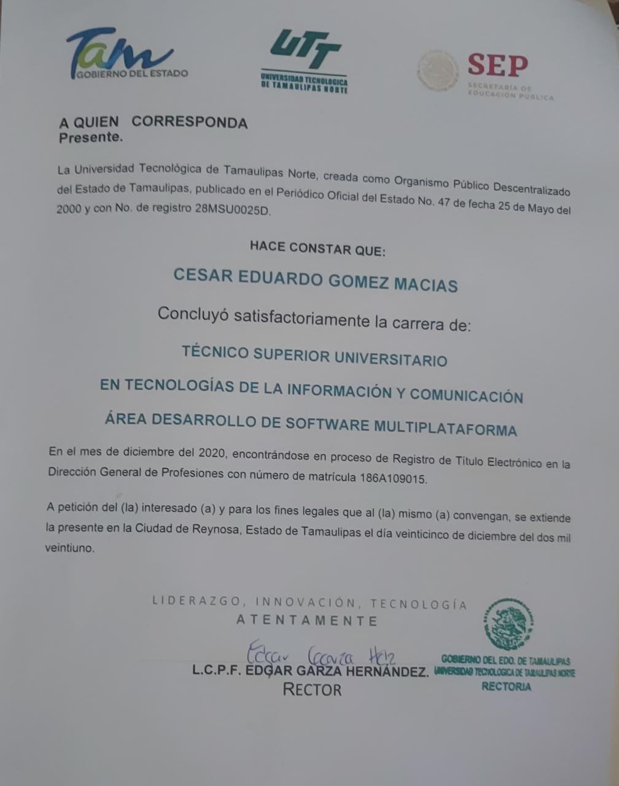

In this content, images about the different titles or certificates that have been achieved will be shown.
Cisco Certificate
Certificate of Introduction to Cybersecurity
Carried out on the Cisco platform and completed in the year 2020
This course was commissioned by our teacher Yves Flores in the last four-month period, to learn more about Cybersecurity.
TSU accreditation certificate

With this evidence we are accredited as Higher University Technicians
Completed in 2020 at the Universidad Tecnologica Tamaulipas Norte in the city of Reynosa, in the state of Tamaulipas, Mexico.